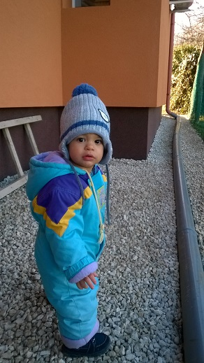

Zoltán Batári

Summary
I am a hardworking and dedicated individual with experience in software developing.
Education
- Bachelor of Information Technology, engineer IT specialist - college of MEDFK (1998-2001)
Work experience
-
Software Developer
March 2001 - Nov 2001
- Production control system
-
Software Developer
May 2003 - Aug 2006
- Quality control and test systems based on image processing
-
Software Developer
Aug 2006 - Now
- Hotel and spa access control systems with cash register and online invoicing
- Working time registration system
Skills
- Visual Basic *
- Delphi6 *****
- DelphiXE7 *****
- C# - Asp.NET,WinForms ****
- JQuery,CSS,HTML,Kendo **
- MSSQL *****
- Oracle *
- SVN,GIT
Other